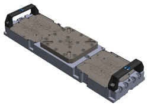
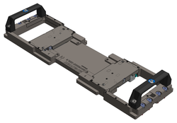
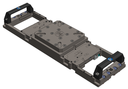
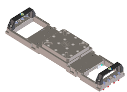

Direct-Probe bridge beams
In addition to soft-docking of the test head, the bridge beam locks the probe card to the prober. It provides additional stiffness and a mechanism through which the probing force can be transferred efficiently to the prober's structure.
- digital and mixed signal test with high pin count,
- the Port Scale RF solution of SmarTest 7,
- the Wave Scale RF solution of SmarTest 8 and also support the MUX cards.
|
The bridge beam for digital and mixed signal (E8016BBD) has a structure without cutouts. |
 |
|
The bridge beam for PSRF (E8016BBRF) supports the connection to the PSRF Direct-Probe™ tower of the tester. |
 |
|
The E8016BBWS bridge beam for WSRF and PMUX has two cut out areas so that the front end modules can access the DUT board or the Direct-Probe™ probe card. |
 |
|
The E8016BBMM bridge beam for WSRF, PMUX and WSMM application has two cut out areas so that the front end modules can access the DUT board or the Direct-Probe™ probe card. Compared to the E8016BBWS, the E8016BBMM has been optimized for more DUT board components. |
 |
Comparison and recommendations
The bridge beam for PSRF (E8016BBRF), the bridge beam for WSRF and PMUX (E8016BBWS), and the bridge beam for WSRF, PMUX, and WSMM (E8016BBMM) have major cut out areas so that front-end modules can access the probe card. The supporting structure of the E8016BBRF is additionally weakened in the middle area, since the PSRF interface requires some space.
The bridge beam for digital and mixed signal (E8016BBD) has a massive strong structure without cutouts. Therefore, compared to the other bridge beams, the deflection under load is less than 50 %.
We recommend therefore using the bridge beam for PSRF (E8016BBRF), the bridge beam for WSRF and PMUX (E8016BBWS) and the bridge beam for WSRF, PMUX, and WSMM (E8016BBMM) for cases where RF interfaces or PMUX modules are installed. The bridge beam for digital and mixed signal (E8016BBD) is the recommended solution for non-RF and non-PMUX applications with high pin count.
Supported stiffeners
Compatibility of bridge beams and stiffeners
| Stiffener | Bridge beam | |||||
|---|---|---|---|---|---|---|
| Min. revision | Digital (E8016BBD) | PSRF (E8016BBRF) | WSRF and PMUX (E8016BBWS) | WSRF, PMUX and WSMM (E8016BBMM) | ||
| Universal | E7018-64170 | Rev. K | Supported | Supported | Not supported | Not supported |
| PMUX | E8021-64170 | Rev. F | Not supported | Not supported | Supported | Supported |
| WSRF | N2605-64170 | Rev. G | Not supported | Not supported | Supported | Supported |
| WSMM | E8027-64170 | Not supported | Not supported | Supported | Supported | |
| Twinning | E8028-64170 | Rev. B | Supported | Not supported | Supported | Supported |
| Legacy stiffeners: Please do not use the following stiffeners for new designs: | ||||||
| Digital | N2360-61076 | Supported | Not supported | Supported | Supported | |
| PSRF | N2360-61097 | Not supported | Supported | Not supported | Not supported | |
Functional changes
- Introduced in SmarTest 7.5.3 / 8.3.0